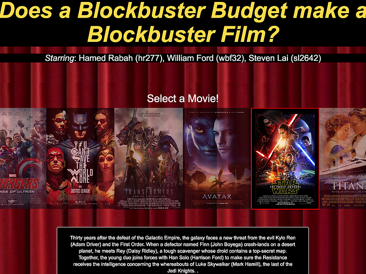

Visualizing movie data in D3.JS
Turning a clunky dataset into something beautiful and useful.
This semester at Cornell University, I was enrolled in an upper level CS course called "Data Driven Web Applications". As one of our projects a team of myself two others had to turn a large dataset into a meaningful visualization.
At the start we did a cursory glance at the various datasets available on Kaggle and based on these drew out various ideas. Our 3 favorites are shown below.
We were deciding between:
idea 1: an interactive map of areas affected by terrorism throughout time.
idea 2: A comparison of movie budget data with their gross revenue.
idea 3: A word map of the most frequent words spoken in TED talks.
We discounted idea 3 first, deciding that text mining various talks was cumbersome and presenting it in a clean format would be a challenge. Then we were stuck between ideas 1 and 2. Idea 1 was certainly provocative, but after going through the data set we realized there was a notable gap in missing data for earlier years. Idea 2 struck the right balance between utility, interest, and pragmatism - both in data and design.
Our next challenge was thinking more closely about the chart we wanted for movie data, as we were also coders, we wanted to run through what each particular function would do. So we created a few sketches representing different ideas.
The first idea we had was to have a grid of circles representing each film, and a slider that the user can utilize to filter movies by score. The X-axis would be the movie's budget and the Y-axis represents the revenue. On each corner of the graph would a commentary about how the film scores, so as an example: the corner of the graph representing a low budget and high revenue would be a indie success, a high budget and high revenue would be a blockbuster success, and a low budget and low grossing movie would mean "save your time!".
The second idea was to have the same axis, but rather than uniformly sized circles, have circles of different radius' representing how well the film scored on Rotten Tomatoes. As shown the second page of the second sketch, our thinking process was to first write down all of our available data and then brainstorm different ways we can use that data. We ultimately decided against this idea, but decided to incorporate parts of it such as the reviews.
The third idea was to have uniformly sized circles, but with various filters representing score, genre, and other factors. When a circle was clicked it would show a pop up displaying move information such as a quote from a review. We decided against this idea because it would require too much manual data entry, especially for the pop up portion.
The final direction we took was to take a hybrid approach that combined our favorite elements of the first and second design. We decided to keep the movie information of the 3rd idea, but move it to the top of the website right under the posters of a few select films. We keep the commentary on the corner of the graph from the first idea, but simplified it.
Here is what the final product looks like:
-A Star Wars inspired header (because nothing says Blockbuster movie like Star Wars)
-A gallery of a few well known movies along with their descriptions upon click
-Clicking a movie directs the user to a highlighted circle on the graph representing that film
Check out the final project here